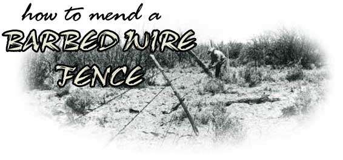

"If you don't have time to do it right, when will you have time to do it over?" That's been our basic motto, and usually it provides a pretty workable philosophy. Even the best job is not necessarily permanent, though, and after 50 years or so even a well-built barbed wire fence may need to be repaired.
One approach is to build a completely new fence alongside the old one, preferably before the first completely gives way. This may sound obvious, "right", and permanent, but it may not be the most practical. method of going about the job. A fence, you see, usually gives way at its weakest point, buteven after it starts to go down-may still have many very serviceable portions remaining.
These good sections can be salvaged with relative ease, while only the broken parts must be replaced. (Note the use of the word relative. It means that fence repair is easier than laying cement blocks, for example. It also means that an afternoon nap is easier than mending a fence.)
The best time to repair a barbed wire fence is just before it goes down. Sure, trying to work in the existing fence row is difficult . . . but you'll at least be able to choose the hours you want to put in on the chore. Once the strands are suddenly down-on the other hand-and the livestock are getting outor in!-it has to be fixed then and there.
You'll find that it is easiest to replace defective posts first. Start by unfastening the strands of wire (whether tied or stapled to the upright) without cutting them. The broken post-stump and all-is then removed. (A pair of posthole diggers comes in very handy at this point.)
A replacement post is next set about two feet deep in the hole from which the broken upright was removed. And please notice that I said "replacement" instead of "new". While it doesn't make much sense to substitute a semi-rotten post for a rotten one, it's often possible to scrounge (from the toolshed or farm shop) a long-forgotten post of about the same age and quality as the better ones still standing in the fence row.
Whether your replacement post is brand new or reclaimed, you'll have to push the strand of barb out of the way to get it into position. An inch or two will usually do the trick and-if you wear heavy enough clothes to protect you from the wires' spikes-you can manage that quite simply by just standing on the post side of the strands and leaning against the stretched wires.
The "new" post is aligned by sighting along the tops of the existing uprights, to see that it's as close to perpendicular as possible. It can then be tamped solidly into place.
Tamping does not mean just shoveling all of the loose dirt back into the hole (although that might well be sufficient to hold the weight of the post). To do the job right, earth should be packed around the upright from the bottom up, with a small amount of dirt placed in the hole at a time and firmed with vertical blows from a blunt, heavy object such as a crowbar. The post should seem steady long before the hole is filled to ground level . . . and when that is done, the post shouldn't budge even when you lean against it with full weight.
Once you've replaced all the defective posts in a bad length of barbed fence, you'll still have to contend with broken strands of wire. Luckily, although barbed wire is normally stretched a full roll at a time, there is frequently no need to replace a whole run of wire.
Repairing a snapped wire is a job for two people. When a strand breaks, the whole fence becomes looser. Therefore, it's necessary to restretch each end of the severed wire to make the tence taut once again. To tackle this job properly you'll need a carpenter's wrecking bar, a pair of work gloves, a hammer, and some staples.
Start at the post nearest the shorter length of broken wire by hooking a barb from the loose strand in the claw of the wrecking bar. (Holding the loose wire along the shaft of the bar will give you better control over the length of barb.) Then, using the post for leverage, pull the wire tight and have your. partner staple it. (See accompanying photos.) Half the broken wire is now repaired.
Enough additional wire now must be spliced to the remaining loose strand of barb so that it will reach the fencepost. (You may be able to get this "new" wire at the same place you got the "new" post.) To fasten the strands together, first loop about eight inches of the broken wire around the "new" one. Then, using the new strand as a crosspiece, twist the old wire tightly around itself a few times. (See photos.) You can then finish the splice with the help of your wrecking bar.
Hold the bar vertically, with the claw against the ground and the shaft sticking straight up. Wrap the new wire once around the top of the bar, and then twist it around itself. The prybar will give you the leverage you need to make good, tight turns which will prevent slippage when the fence is up. (See photo.)
Once the splice is complete, stretch the lengthened wire and staple it to the same fencepost-and in the same way-to which you attached the first strand. (Don't forget, you need two people for this job.) The barb is now tight and continuous . . . and, just as important, there is equal tension on each side of the post.
When you have all the replacement posts up and the wires spliced, the second still must be properly fastened to the first. (Remember that each strand has to be attached at every upright.) If the posts are made of wood, the wires already stretched, and the fence is considered only semi-permanent, this last chore can be handled quickly with staples. Ties, however, spiffy up the stretching job, act as a more secure fastening device, and have no single pressure point to give way. For these reasons, it's a very good idea to attach the strands of barb-especially old, loose ones-to the uprights with ties.
The principle is simple: Wrap a plain wire tightly around a post so that it holds a barbed strand on both sides.
You'll need 18 inches of tie wire for each intersection of wire and post. While standing in front of the upright on the barb side, wrap the plain wire around the horizontal strand on the left side of the post. Next, push the barbed wire in on the left while you loop the fastener behind the post and wrap it tightly around the barb on the other (right) side. (See photo.) The more pressure the fastener exerts on the strand, the tighter the fence, and the better the tie.
To finish the job, loop the tie wire back behind the post once more and wrap it around the barb on the left side of the upright again. A barb fastened to a post in this way should hold your weight without slipping. (See photo.)
There you are . . . a functional fence again. Not as neat as the original, perhaps, but it'll do the job!
|
 Spliced wire won't look just like new . . . but will save the expense and labor of' replacing a weary fence like this one. |
ABOVE TOP:To repair an existing barbed wire fence means working under difficult conditions. It you wear heavy clothes for the job, you can hold back the wires with your body while you line up replacement posts. SECOND FROM TOP: Even a treated post rots after many years in the ground. Choose a sound substitute and tamp the earth well around it so the new support can take its share of the load. THIRD FROM TOP: The shorter end of a broken wire must be pulled tight and stapled firmly to the nearest post before splicing. Begin by hooking a barb in the claw of a carpenter'.,, wrecking bar. FOURTH FROM TOP: Hold the loose end of the wire along the shaft of the bar and pull the strand right-using the post for leverage-while your partner drives in the staples. FIFTH FROM TOP: To splice the broken wire, a new strand is held as a crosspiece while the old length is looped around it and twisted back on itself several times. Sharp turns are necessary to avoid slippage. SIXTH FROM TOP: The wrecking bar can be used to keep the new length of wire steady while you twist the strand around itself. SEVENTH FROM TOP: Remove the slack by pushing the barbed wire with the left hand and pulling the tie with the right. EIGHTH FROM TOP: After splicing, the wire must be stretched and attached to the post . . . and on an older fence this is better done by tying than by stapling. First, support the barbed strand and take a few turns of plain wire around it with the left hand. NINTH FROM TOP:More slack is taken up by pushing the barbed length with the right hand while wrapping the tie with the left. TENTH FROM TOP:A good tie is strong enough to hold your weight. |
|